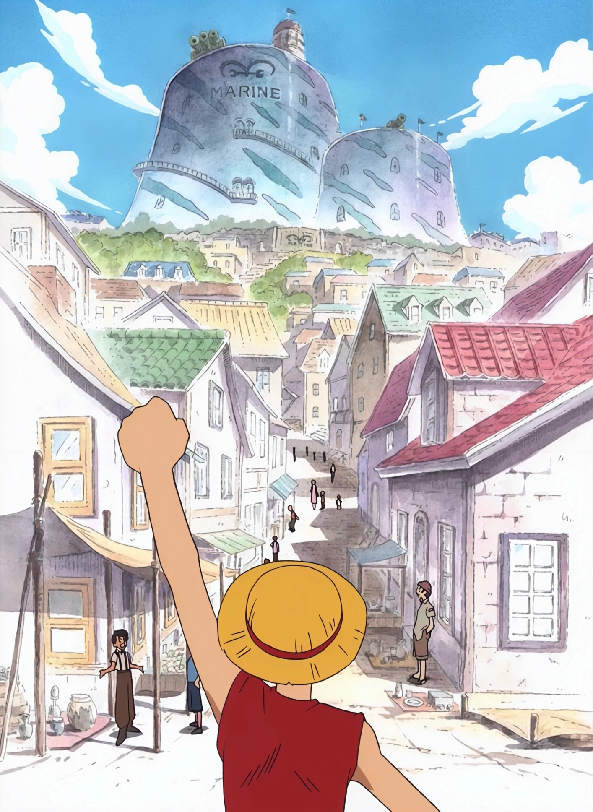

east blue
איסט בלו הוא אחד משלושת האיזורים בסדרה, ומהווה את הפרק הראשון ברצף הארקים של "וואן פיס".
איסט בלו הוא כיבוש האיים המזרחי של העולם הימי שבו מתרחשות הפעולות במהלך רוב המחזור הראשון של הסדרה. במהלך איסט בלו, אנו מכירים את דמויות העיקריות הראשונות של הסדרה ואת התרבות הימית שבעולם המופלא שבו הם חיים. הארק מתמקד בהתמודדות של הצוות הראשי של הפיראטים Monkey D. Luffy עם האיים באיסט בלו ועם אנשים רבים שם.
בעקבות חלומו להקים צוות של פיראטים, לופי מתחזק בכוחו המיוחד שהוא קיבל באוכלמיית הגומי ומתפרק לחפש חברים שיצטרפו אליו. הוא מצליח לשכנע את כל החברים שהוא פוגש בדרכו להצטרף אליו, וכך נוצר הצוות שלו המוכר בשם Straw Hat Pirates.
הצוות של לופי מתחיל לחקור את איסט בלו ולהתמודד עם אתגר
Shells Town
Shells Town הוא אי ב-East Blue בסדרת One Piece. בימי ההתחלה של הסדרה, לופי וחבריו מגיעים לאי זה במסעם במטרה למצוא את זורו, חבר הצוות הראשון של לופי.
ב -Shells Town, הם מתקלים במשטרה מיליטרית מאובקת, בראשה קפטן מורגן. מורגן הוא קפטן פיראט נוכחי שפרש מהצבא ויצר עצמאות באי הסיבלי על ידי התפשטות ידו הברזלית בשלטון המקומי. הוא מטריד את התושבים ומנסה לשלוט על האי באורך וברוחב.
לופי מתבקש על ידי אחד משוטרי המיליטריה המקומיים, קפטן טאשיגי, לעזור לו להפיל את מורגן. לופי מתקשה בפעולה זו בהתחלה, אך עם העזרה של חבריו והתפשטות הסיפור, הוא מצליח לנצח את מורגן ולשחרר את האי משלטוןו.
עם הניצחון על מורגן, לופי וחבריו מצליחים לקבל אמון ותמיכה מהתושבים של Shells Town, וזהו הפוך למעין נקודת מוצא ומקום נפילה של מורגן. מאז, Shells Town מסתמנת כמקום בו לופי וחבריו השארים יכולים לחפש מסעות נוספים ולהתחיל את מסעם במחזור East Blue הראשון.
